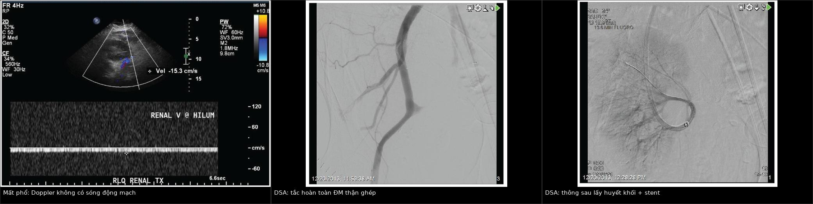
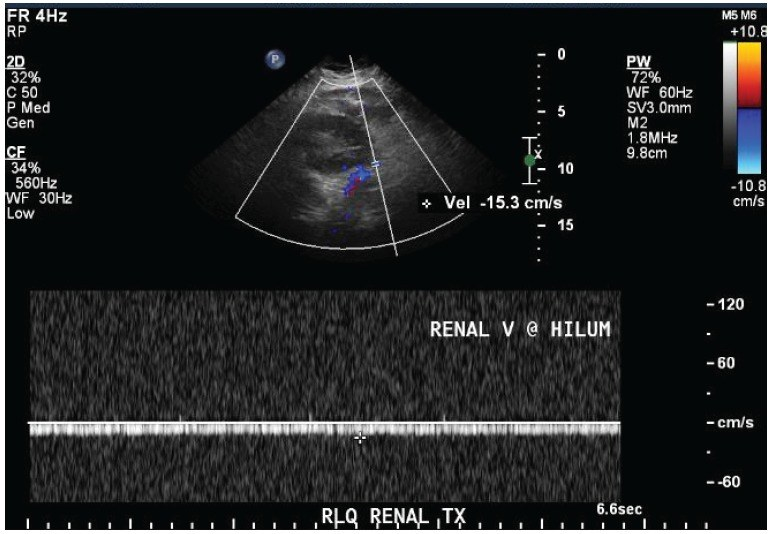
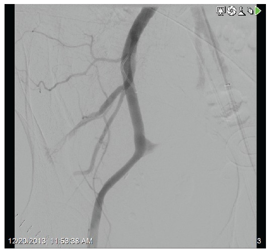

3153 — Huyết khối – tắc động mạch thận ghép CẤP: vô niệu + mất phổ trong nhu mô, cửa sổ vài giờ
Tags: pattern:mat-pho-mach pattern:khong-ngam-thuoc pattern:vo-nieu vung:than-ghep vung:cuong-mach-ghep anatomy:dong-mach-than-ghep protocol:sieu-am-Doppler protocol:CTA-bung score:RI score:Banff
Mức chắc chắn (certainty): tổng hợp y văn (literature synthesis) — ghép hai ca nguyên văn (J Nephropathol 2014, PMC4119325: tắc ĐM do hẹp đoạn xa, có ảnh Doppler + DSA; BMC Nephrol 2026, PMC13595620: tắc ĐM muộn do thải ghép thể dịch), một ca tắc sớm do yếu tố đông máu (World J Transplant 2026, PMC12836249), loạt 2.304 ca ghép thận (Front Transplant 2023, PMC11235313) và tổng quan yếu tố nguy cơ (J Transplant 2012, PMC3369524). Không có ca do nhóm tự chụp.
Câu hỏi thực hành: nam 52 tuổi, ngày thứ 7 sau ghép thận từ người hiến chết não. Hôm qua nước tiểu 1.500 mL/ngày, hôm nay vô niệu, đau và ấn đau hố ghép, huyết áp 95/60 mmHg. Siêu âm Doppler: không thấy phổ động mạch lẫn tĩnh mạch trong nhu mô. Câu hỏi: có phải thải ghép cấp không, và còn kịp cứu thận không? Bài chốt ba quyết định: (1) vô niệu đột ngột sau ghép + mất phổ trong nhu mô = tắc động mạch cho tới khi chứng minh ngược — không chờ thải ghép, không chờ men thận; (2) siêu âm Doppler là cửa đầu tiên nhưng KHÔNG đủ loại trừ (RI chồng lấp giữa các nguyên nhân), CTA là cửa chốt, DSA là cửa vừa chẩn đoán vừa điều trị; (3) mốc thời gian là giờ, không phải ngày — đã có ca tái thông thành công sau 5,5 giờ thiếu máu ấm, và tái thông muộn cứu được mạch nhưng không cứu được nhu mô (hoại tử vỏ lan rộng).
1. Tổng quan bệnh học – cơ chế hình ảnh: vì sao thận ghép "tắt phổ" là cấp cứu
- Giải phẫu quyết định tất cả: thận ghép được đặt ngoài phúc mạc ở hố chậu, động mạch thận người cho nối tận–bên vào động mạch chậu ngoài (hoặc động mạch chậu trong), tĩnh mạch nối vào tĩnh mạch chậu ngoài (Korean J Radiol 2015, PMC4435990). Thận là tạng một cuống mạch, gần như không có tuần hoàn bàng hệ đáng kể — nên một huyết khối ở miệng nối = tắt toàn bộ nhu mô, khác hẳn gan hay phổi.
- Tần suất — bốn con số cần nhớ:
- Huyết khối động mạch 0,2–7,5%, huyết khối tĩnh mạch 0,1–8,2%; gộp lại, biến cố huyết khối mạch chiếm tới 1/3 các ca mất ghép sớm (J Transplant 2012, PMC3369524).
- Tắc động mạch thận ghép (RAAT) 0,5–3,5%, phần lớn trong tháng đầu, và thường mất ghép nếu phát hiện muộn (BMC Nephrol 2026, PMC13595620).
- Trong 2.304 ca ghép một trung tâm: biến chứng mạch 2,34% (54/2.304), trong đó tắc động mạch chỉ 2 ca (0,09%) và tắc tĩnh mạch 3 ca (0,13%) — tức hiếm nhưng khi xảy ra thì kết cục rất xấu, tác giả ghi rõ nhóm tắc mạch có tỷ lệ mất thận cao (Front Transplant 2023, PMC11235313).
- Hẹp động mạch thận ghép (TRAS) — kẻ bắt chước mạn tính — chiếm 1–5% các ca tăng huyết áp sau ghép, xuất hiện chủ yếu trong 6 tháng đầu (Clin Kidney J 2015, PMC4310434).
- Thời điểm — hai ổ bệnh khác nhau:
- Sớm (< 1 tháng, đa số < 48 giờ): nguyên nhân kỹ thuật — gấp góc, xoắn, bóc tách nội mạc, miệng nối hẹp, đa động mạch phụ, hạ huyết áp, giảm thể tích (J Transplant 2012; J Nephropathol 2014).
- Muộn: hẹp nặng tiến triển, thải ghép cấp thể dịch (ca POD 83), hội chứng tăng đông (yếu tố V Leiden), hoặc biến cố toàn thân (xuất huyết tiêu hóa gây tụt áp) (BMC Nephrol 2026; World J Transplant 2026; Medicine 2016, PMC5265842).
- Yếu tố nguy cơ đo được: tuổi người cho < 6 hoặc > 60, tuổi người nhận < 5–6**, **huyết động không ổn định chu phẫu**, **lọc màng bụng trước ghép**, **bệnh thận đái tháo đường**, **tiền sử huyết khối**, **người cho chết não**, **thiếu máu lạnh > 24 giờ; đa động mạch KHÔNG phải yếu tố nguy cơ (J Transplant 2012, PMC3369524).
- TẠI SAO hình ảnh thay đổi theo giờ — vật lý của dòng chảy và của thuốc cản quang:
- Siêu âm Doppler đo vận tốc dòng máu, không đo tưới máu. Thận ghép bình thường có phổ động mạch tâm thu–tâm trương liên tục và chỉ số kháng (RI) khoảng 0,6–0,8; gộp 13 nghiên cứu, RI trung bình nhóm chứng 0,71 và nhóm rối loạn chức năng mảnh ghép 0,73 — chồng lấp gần như hoàn toàn (Caspian J Intern Med 2024, PMC11246670). Vì vậy RI đơn lẻ không chẩn đoán được nguyên nhân; cái chốt là có hay không có phổ, và phổ tĩnh mạch có còn hay không.
- Tắc động mạch → mất cả phổ động mạch và tĩnh mạch trong nhu mô (ca nguyên văn: RI 0,98 ở ngày 2, rồi mất phổ hoàn toàn khi tắc) (J Nephropathol 2014).
- Tắc tĩnh mạch → máu vào được mà không ra: phổ động mạch còn nhưng RI tăng rất cao, có thể đảo chiều tâm trương, thận phù to, căng đau — đây là dấu hiệu phân biệt tại giường, không cần chờ CTA.
- CT có cản quang đo độ ngấm thuốc (Hounsfield), tức lượng iod đến nhu mô: tắc động mạch → khuyết thuốc cắt ngang tại miệng nối, nhu mô không ngấm ở thì động mạch, vỏ thận mất viền tăng đậm; tắc tĩnh mạch → thận to, ngấm thuốc kéo dài bất thường, huyết khối thấy trong lòng tĩnh mạch (Korean J Radiol 2015, Hình 7–8).
- Vì sao tái thông muộn vẫn mất thận: tế bào ống thận chịu thiếu máu ấm kém; sau 5,5 giờ đã có ca tái thông thành công về mạch nhưng nhu mô hoại tử vỏ lan rộng, sinh thiết chỉ thấy nhồi máu, không có dấu thải ghép (Arch Surg 1982 — ca tái thông sau 5,5 giờ; J Nephropathol 2014 — mô bệnh học).
- Vì sao dễ bị gọi sai là "thải ghép cấp" hoặc "hoại tử ống thận cấp": cả ba đều cho vô niệu + creatinin tăng + thận to, và đều có thể tăng RI; chỉ mất phổ hoàn toàn và khuyết thuốc trên CTA mới tách được tắc mạch ra khỏi hai thể kia.
2. Mẫu hình + chẩn đoán phân biệt theo thời điểm và kiểu phổ Doppler (Gamut)
- Mẫu hình cốt lõi: vô niệu/thiểu niệu đột ngột + đau, ấn đau hố ghép (có thể giảm tiểu cầu do ngưng tập tiểu cầu tại huyết khối) + mất phổ mạch trong nhu mô trên Doppler.
- Gamut theo kiểu phổ (quyết định tại giường):
- Mất cả phổ động mạch và tĩnh mạch → tắc động mạch thận ghép, nhồi máu toàn bộ, hoặc chèn ép cuống mạch (nang bạch huyết, máu tụ lớn), sốc giảm thể tích (kiểm tra huyết áp trước khi kết luận).
- Mất phổ tĩnh mạch, phổ động mạch còn + RI rất cao/đảo tâm trương → tắc tĩnh mạch thận ghép.
- Phổ động mạch còn nhưng "tardus–parvus" (sóng dâng chậm, đỉnh tù, giảm biên độ) + tăng vận tốc khu trú tại chỗ hẹp → hẹp động mạch ghép/gấp góc; cần CTA/DSA.
- Phổ còn, RI tăng nhẹ, không giãn đài bể thận → thải ghép cấp, hoại tử ống thận cấp, nhiễm trùng, thuốc độc thận — chẩn đoán bằng sinh thiết, không bằng Doppler.
- Phổ còn + giãn đài bể thận → tắc nghẽn niệu quản (hẹp miệng nối, huyết khối máu cục, nang bạch huyết chèn ép) — siêu âm thấy giãn đài bể thận, không có ở tắc mạch đơn thuần.
- Gamut theo thời điểm:
- Ngày 0–7: tắc động mạch do kỹ thuật (gấp góc, xoắn, bóc tách), tắc tĩnh mạch, thải ghép tối cấp, hoại tử ống thận cấp.
- Tuần 2–4: thải ghép cấp, hẹp miệng nối niệu quản, nhiễm CMV/BK, huyết khối do tăng đông.
- Tháng 2–6: TRAS (1–5% tăng huyết áp sau ghép), thải ghép thể dịch muộn — ca POD 83 (BMC Nephrol 2026).
- Ba câu hỏi đọc ảnh: (1) phổ động mạch còn không? (2) phổ tĩnh mạch còn không? (3) có giãn đài bể thận hay khối chèn ép cuống không? Trả lời (1) "không" → cấp cứu mạch, không phải thải ghép.
3. Bảng so sánh phân biệt (ma trận đối chiếu)
| Thực thể (entity) | Hình ảnh điển hình (Doppler/CT/DSA) | Chốt vào (rule-in) | Chốt loại (rule-out) | Gợi ý xác nhận |
|---|---|---|---|---|
| Tắc động mạch thận ghép (RAAT) | Mất phổ động mạch VÀ tĩnh mạch trong nhu mô; CTA khuyết thuốc cắt ngang miệng nối, nhu mô không ngấm thì động mạch; DSA thấy cụt đầu | Vô niệu đột ngột + mất cả hai phổ + khuyết thuốc tại miệng nối | Còn phổ động mạch, thận ngấm thuốc đều → không phải tắc động mạch | Doppler ngay tại giường, rồi CTA; DSA để tái thông |
| Tắc tĩnh mạch thận ghép | Mất phổ tĩnh mạch, phổ động mạch RI rất cao/đảo tâm trương; thận to, căng, ngấm thuốc kéo dài; CTA thấy huyết khối trong tĩnh mạch chậu | Thận phù to + đau + RI cao + mất phổ tĩnh mạch | Mất cả phổ động mạch → nghiêng tắc động mạch | CTA thì tĩnh mạch; Doppler lặp sau 1–2 giờ |
| Thải ghép cấp (TCMR/ABMR) | Phổ còn, RI tăng nhẹ, thận to; không có huyết khối; sinh thiết Banff | Sốt, thận to, creatinin tăng, phổ còn, không khuyết thuốc | Mất phổ hoàn toàn hoặc khuyết thuốc tại miệng nối → không phải thải ghép đơn thuần | Sinh thiết + C4d/DSA; không nong mạch |
| Hoại tử ống thận cấp (ATN) | Phổ còn, RI có thể cao; thận ngấm thuốc bình thường; không thiểu niệu tuyệt đối kéo dài | Chức năng chậm hồi phục sau thiếu máu lạnh, phổ còn | Mất phổ → tắc mạch | Theo dõi nước tiểu, creatinin; sinh thiết nếu kéo dài |
| Hẹp động mạch ghép (TRAS) / gấp góc | Tardus–parvus hạ lưu + tăng vận tốc tại chỗ hẹp; CTA/DSA thấy hẹp ± xoắn; xuất hiện 1–5% tăng huyết áp sau ghép, trong 6 tháng đầu | Tăng huyết áp khó kiểm soát + tardus–parvus + hẹp thấy được | Tắc hoàn toàn (mất phổ) → khác | CTA, DSA + nong/stent |
| Tắc nghẽn niệu quản | Giãn đài bể thận, phổ mạch còn, RI có thể tăng; CT thấy niệu quản giãn tới chỗ hẹp | Giãn đài bể thận + phổ còn + creatinin tăng | Không giãn đài bể thận → không phải tắc nghẽn đơn thuần | Siêu âm, CT không cản quang; dẫn lưu |
| Chèn ép cuống mạch (nang bạch huyết, máu tụ) | Khối dịch/quang quanh thận, đè cuống; phổ có thể mất một phần; thận ngấm thuốc giảm | Khối quanh thận + mất phổ khu trú + tụt huyết áp | Không có khối chèn ép → nghĩ huyết khối nội sinh | Siêu âm/CT; chọc hút/dẫn lưu |
| Nhồi máu vỏ thận toàn bộ | Không ngấm thuốc vỏ, viền vỏ mỏng còn ngấm ("cortical rim sign"), mất phổ; DSA tắc | Khuyết thuốc vỏ lan rộng + mất phổ + vô niệu | Còn ngấm thuốc vỏ → chưa nhồi máu toàn bộ | CTA; tiên lượng mất thận |

Trái: Doppler nhu mô thận ghép không có sóng động mạch, chỉ còn dòng tĩnh mạch chậm (vận tốc −15,3 cm/s). Giữa: DSA tắc hoàn toàn động mạch thận ghép. Phải: sau lấy huyết khối + nong/stent chỗ hẹp đoạn xa, mạch thông lại toàn bộ. Nguồn: J Nephropathol 2014 (PMC4119325), CC BY 4.0. Ảnh ghép letterbox, giữ nguyên khung và thang đo của tác giả.Đọc kỹ ba mẫu hình
- Mất phổ nhưng còn "màu" trên ảnh Doppler màu: màu có thể là nhiễu do tăng gain hoặc dòng bàng hệ rất chậm; chỉ phổ xung (spectral) mới xác nhận. Ca gốc cho thấy phổ gần phẳng, không có sóng tâm thu.
- Tardus–parvus là dấu của hẹp phía trên, không phải của tắc: gặp ở TRAS, gấp góc, và cả hạ huyết áp — luôn đo huyết áp trước khi kết luận.
- Tái thông ≠ hồi phục chức năng: ca gốc thông mạch hoàn toàn sau stent nhưng nước tiểu không trở lại trong 24 giờ; sinh thiết nhồi máu lan rộng, không thải ghép — đây là lý do phải hành động trước khi có hoại tử vỏ.
4. Protocol chụp + ngưỡng thời gian xử trí
- Bước 1 — Siêu âm Doppler tại giường (phút đầu tiên):
- Đầu dò linear 5–12 MHz (thận ghép nông), đặt ở hố chậu, khảo sát động mạch chính, tĩnh mạch chính, động mạch gian tiểu thùy/động mạch cung.
- Ghi có/không có phổ ở 3 vị trí nhu mô (cực trên, giữa, cực dưới), RI tại mỗi vị trí, và phổ tĩnh mạch liên tục.
- Đo kích thước thận (mm), tìm giãn đài bể thận, khối dịch quanh thận, máu tụ.
- So với lần chụp trước nếu có: RI tăng ≥ 10% giữa hai lần chụp trong tháng đầu liên quan tới chức năng ghép chậm hồi phục và hoại tử ống (J Bras Nefrol 2020, PMC7860640).
- Bước 2 — CT có cản quang (cửa chốt, làm ngay, không chờ creatinin):
- Thì động mạch muộn + thì tĩnh mạch, lát ≤ 1 mm, MPR theo trục mạch, cửa sổ mạch; đọc miệng nối tận–bên, gấp góc/xoắn, bóc tách, huyết khối lan vào động mạch chậu, tĩnh mạch chậu, khối chèn ép.
- Không trì hoãn vì creatinin: một lần CTA rẻ hơn nhiều so với mất thận; cân nhắc giảm liều iod và hydrat hóa ở người còn nước tiểu.
- Bước 3 — DSA (chẩn đoán + điều trị trong cùng một thì):
- Lấy huyết khối bằng catheter (aspiration/pharmacomechanical), tiêm thuốc tiêu sợi huyết tại chỗ, nong bóng + stent nếu có hẹp đoạn xa (ca gốc), hoặc phẫu thuật lấy huyết khối + nối lại mạch nếu thất bại/miệng nối hỏng.
- Ngưỡng thời gian: hành động trong giờ, không phải ngày. Ca tái thông thành công sau 5,5 giờ thiếu máu ấm đã được báo cáo (Arch Surg 1982); ngược lại, tái thông sau > 6 giờ thường chỉ cứu được mạch, không cứu được nhu mô (J Nephropathol 2014; BMC Nephrol 2026 — tái thông thành công nhưng phải cắt thận).
- Tiêu sợi huyết toàn thân đã được dùng khi không can thiệp được; nguy cơ chảy máu phải cân với nguy cơ mất thận.
- Bước 4 — sau tái thông: Doppler lại 6–12 giờ và 24 giờ, theo dõi nước tiểu theo giờ, creatinin, K⁺, huyết áp; CTA/DSA kiểm tra nếu phổ không hồi phục; không kết luận thất bại trước 24–48 giờ về chức năng, nhưng kết luận thất bại về mạch ngay nếu vẫn mất phổ.
- Bước 5 — khi mất thận: nếu nhu mô đã hoại tử (không ngấm thuốc, không hồi phục sau 24–48 giờ), cắt thận ghép + trở lại lọc máu/chờ ghép lại; tiếp tục ức chế miễn dịch tối thiểu theo quyết định của ê-kíp ghép.
flowchart TD
A[Vo nieu dot ngot sau ghep than] --> B[Doppler tai giuong]
B --> C{Con pho dong mach trong nhu mo?}
C -->|Khong| D[CTA ngay - khong cho creatinin]
C -->|Co| E{Con pho tinh mach?}
E -->|Khong| F[Nghi tac tinh mach - CTA thi tinh mach]
E -->|Co| G{Co gian dai be than?}
G -->|Co| H[Tac nghen nieu quan - dan luu]
G -->|Khong| I[Thai ghep cap / ATN - sinh thiet]
D --> J{Khuyet thuoc cat ngang mieng noi?}
J -->|Co| K[DSA - lay huyet khoi + stent]
J -->|Khong| L[Khoi chen ep / soc giam the tich]
K --> M[Doppler lai 6-12 gio va 24 gio]
5. Biến thể bình thường và cạm bẫy
- RI chồng lấp: nhóm chứng 0,71 so với rối loạn chức năng 0,73 (PMC11246670) — một trị số RI không loại trừ và không chẩn đoán nguyên nhân; phải đọc có/không có phổ và phổ tĩnh mạch.
- Hạ huyết áp/tụt thể tích làm mất phổ thoáng qua mà không có huyết khối: luôn đo huyết áp, bù dịch, chụp lại trước khi đưa bệnh nhân đi DSA.
- Nhiễu màu (color artifact): gain cao, chuyển động hô hấp, nhịp tim nhanh tạo "dòng giả" — dùng phổ xung, không dùng ảnh màu để kết luận.
- Bỏ sót huyết khối tĩnh mạch vì thấy "vẫn có phổ động mạch": phổ động mạch còn nhưng RI rất cao/đảo tâm trương là dấu hiệu tắc tĩnh mạch, không phải "thận đang hồi phục".
- Quy sai cho thải ghép: ca POD 83 chứng minh tắc mạch muộn có thể do thải ghép thể dịch; tái thông mạch mà không điều trị thải ghép thì mạch thông nhưng thận vẫn mất (PMC13595620).
- Tưởng ATN là "chờ đợi": ATN có phổ bình thường; mất phổ không bao giờ là ATN.
- Chỉ làm siêu âm rồi dừng: siêu âm không thấy huyết khối ở miệng nối trong nhiều ca; CTA/DSA mới định vị được và mở đường điều trị.
- Tái thông muộn vẫn "thành công": thông mạch trên DSA nhưng nhu mô đã hoại tử — gia đình và ê-kíp dễ lạc quan sai; theo dõi nước tiểu là thước đo thật.
- Đa động mạch không phải yếu tố nguy cơ (PMC3369524): đừng "đổ lỗi" cho giải phẫu để bỏ qua huyết khối/tăng đông.
6. Tự lượng giá — Blind Quiz
Ca 1 — Nam 71 tuổi, ngày thứ 7 sau ghép thận, vô niệu. Nhìn ảnh trước, mô tả sau.

- Gợi ý lâm sàng: buồn nôn, nôn, nước tiểu giảm, đau nhẹ hố ghép; creatinin 2,9 → 3,5 mg/dL; RI ngày 2 là 0,98.
- Câu hỏi: Phổ trên ảnh nói gì? Hai chẩn đoán phân biệt hàng đầu? Bước tiếp theo trong 30 phút?
Bấm để hiện đáp án
- Dấu hiệu: không có sóng động mạch trong nhu mô, chỉ còn dòng chậm ghi ở nhánh tĩnh mạch (−15,3 cm/s); thận không thấy phổ tâm thu.
- Chẩn đoán: tắc động mạch thận ghép (không phải thải ghép, không phải ATN). Phân biệt: tắc tĩnh mạch (còn phổ động mạch, RI rất cao) và hạ huyết áp (hồi phục sau bù dịch).
- Bước tiếp theo: CTA ngay hoặc DSA trực tiếp nếu sẵn sàng can thiệp; không chờ kết quả men thận.
- Nguồn: J Nephropathol 2014 (PMC4119325), CC BY 4.0.
Ca 2 — Cùng bệnh nhân, DSA sau khi chụp.

- Câu hỏi: Vị trí tắc? Nếu sau khi lấy huyết khối thấy hẹp đoạn xa, xử trí thế nào và vì sao vẫn có thể mất thận?
Bấm để hiện đáp án
- Dấu hiệu: cụt đầu động mạch thận ghép ngay sau miệng nối, không có nhánh nhu mô.
- Xử trí: lấy huyết khối bằng catheter, sau đó nong bóng + stent chỗ hẹp đoạn xa (ca gốc), hoặc mổ lấy huyết khối.
- Vì sao vẫn mất thận: tái thông không hồi phục nhu mô đã hoại tử — ca gốc vẫn vô niệu sau 24 giờ, sinh thiết nhồi máu lan rộng, không thải ghép.
- Nguồn: J Nephropathol 2014 (PMC4119325), CC BY 4.0.
Ca 3 — Nữ 32 tuổi, ngày thứ 83 sau ghép, vô niệu; Doppler mất phổ động mạch; tiêu sợi huyết tại chỗ thông lại được mạch nhưng không có nước tiểu.
- Câu hỏi: Vì sao tắc mạch muộn lại đổi chẩn đoán? Xét nghiệm nào giúp xác định nguyên nhân khi sinh thiết bị chống chỉ định?
Bấm để hiện đáp án
- Chẩn đoán: tắc động mạch thận ghép muộn do thải ghép thể dịch (ABMR), không phải lỗi kỹ thuật; mô bệnh sau cắt thận C4d dương lan tỏa.
- Xét nghiệm: dd-cfDNA huyết tương 1,36% và nước tiểu 11,43% gợi ý thải ghép đang hoạt động khi không thể sinh thiết; kết hợp DSA và theo dõi.
- Bài học: tái thông mạch không thay thế điều trị thải ghép; ở tắc muộn phải tìm nguyên nhân miễn dịch.
- Nguồn: BMC Nephrol 2026 (PMC13595620), CC BY-NC-ND 4.0.
Bài liên quan chéo
- 3087 – Hẹp động mạch thận ghép (thể mạn, tardus–parvus)
- 3088 – Nang bạch huyết quanh thận ghép (chèn ép cuống mạch)
- 3096 – Bệnh thận do BK polyomavirus (nguyên nhân nhiễm của rối loạn chức năng ghép)
- 3011 – Biến chứng niệu quản sau ghép thận (tắc nghẽn, rò)
- 117 – Tương tác thuốc và theo dõi tacrolimus
- 6111 – Huyết khối tĩnh mạch thận ở sơ sinh (cùng cơ chế mất phổ tĩnh mạch)
Ảnh
images/composite_tac-dong-mach-than-ghep.jpg— ghép 3 ảnh từ J Nephropathol 2014 (PMC4119325), CC BY 4.0.images/3153_hoi-chung-mat-pho_US-Doppler_PMC4119325.jpg— Doppler, CC BY 4.0.images/3153_hoi-chung-mat-pho_DSA-tac_PMC4119325.jpg— DSA tắc, CC BY 4.0.images/3153_hoi-chung-mat-pho_DSA-sau-stent_PMC4119325.jpg— DSA sau tái thông, CC BY 4.0.- Nguồn, giấy phép và ghi chú phái sinh từng ảnh:
images/CREDITS.md.
Không dùng để chẩn đoán độc lập khi chưa có người hướng dẫn.